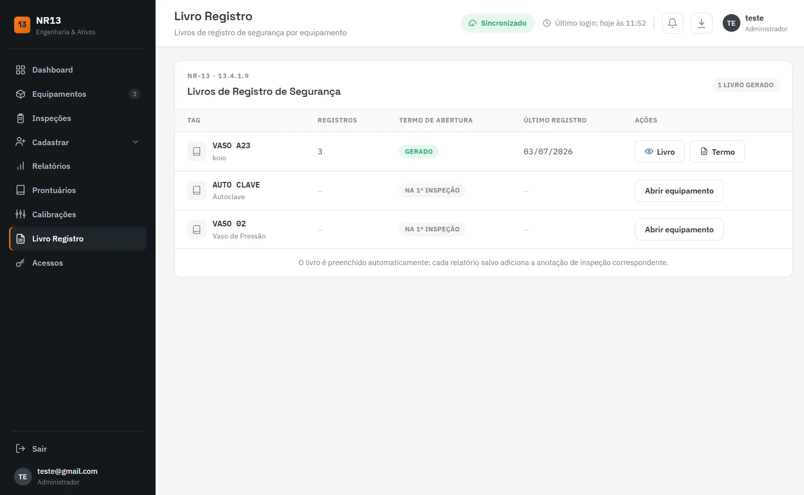

Na caldeira, atraso vira interdição
Vaso de pressão atrasado gera autuação. Caldeira atrasada pode parar a fábrica: a NR-13 lista o atraso na inspeção periódica de caldeira entre as condições de risco grave e iminente. Lavanderia industrial, laticínio, frigorífico, hospital, indústria de alimentos — quem depende de vapor não pode descobrir o vencimento no dia da visita do auditor.
Sistema NR13: R$ 197 por mês, acesso total. Sem limite de equipamentos, clientes, inspeções ou usuários, sem taxa de implantação e com a carga inicial do parque feita junto com você. Ficou em dúvida se serve para o seu caso? Fale comigo no WhatsApp antes de assinar.
O que a gestão de uma caldeira envolve
| Exigência | Frequência típica | No Sistema NR13 |
|---|---|---|
| Inspeção de segurança periódica | Até 12 meses (categorias A e B, sem SPIE) | Prazo no cadastro + checklist pelo celular |
| Registro de segurança | A cada ocorrência e inspeção | Livro alimentado a cada relatório |
| Válvulas de segurança | Teste e calibração periódicos | Lote de calibração vinculado |
| Manômetro e pressostato | Calibração periódica | Cadastro por nº de série |
| Prontuário | Permanente, atualizado a cada alteração | Ficha técnica e documentos |
| Espessura e PMTA | A cada inspeção com medição | Memória de cálculo ASME |
Prazos com SPIE e casos especiais estão em periodicidade de inspeção NR-13. O roteiro de campo completo está em como inspecionar caldeira.
Livro de registro: o ponto fraco da casa de caldeiras
O registro de segurança da caldeira é o documento que mais aparece incompleto: o caderno fica na casa de caldeiras, molha, some, e as anotações de inspeção ficam meses atrasadas. No sistema, cada relatório salvo gera a anotação correspondente no livro daquele equipamento, com termo de abertura e contagem de registros. Veja o que deve constar em livro de registro de segurança NR-13.

Caldeira sem histórico?
Se a caldeira chegou de outra planta, foi comprada usada ou perdeu a documentação, o prontuário precisa ser reconstituído antes de entrar na rotina — o passo a passo está em caldeira sem prontuário. Depois, o prontuário digital mantém tudo no lugar. Para a inspeção com laudo e ART na Grande Vitória, veja inspeção NR-13.
Perguntas frequentes
Qual o prazo de inspeção de caldeira pela NR-13?
Sem SPIE, caldeiras das categorias A e B têm inspeção de segurança periódica em até 12 meses. Com SPIE e em casos especiais, os prazos podem ser maiores.
O sistema substitui o operador ou o engenheiro?
Não. A operação continua com operador capacitado e a inspeção com Profissional Habilitado. O sistema organiza documentos, prazos, registros e cálculos.
O livro de registro da caldeira pode ficar no sistema?
O sistema gera o livro de registro por equipamento, com termo de abertura e anotação automática a cada relatório salvo. Ocorrências do dia a dia continuam sendo registradas pela equipe.
Dá para controlar as válvulas de segurança da caldeira?
Sim. Cada válvula é cadastrada com número de série e vinculada à caldeira, com o lote de calibração de cada inspeção.
Quanto custa?
R$ 197 por mês, com acesso total e sem limite de equipamentos.
Sua caldeira está com a inspeção em dia?
Me chame no WhatsApp com a data do último laudo e o tipo de caldeira.